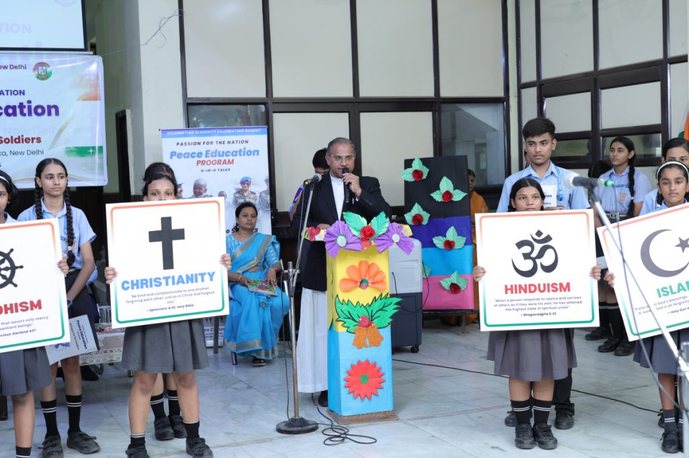
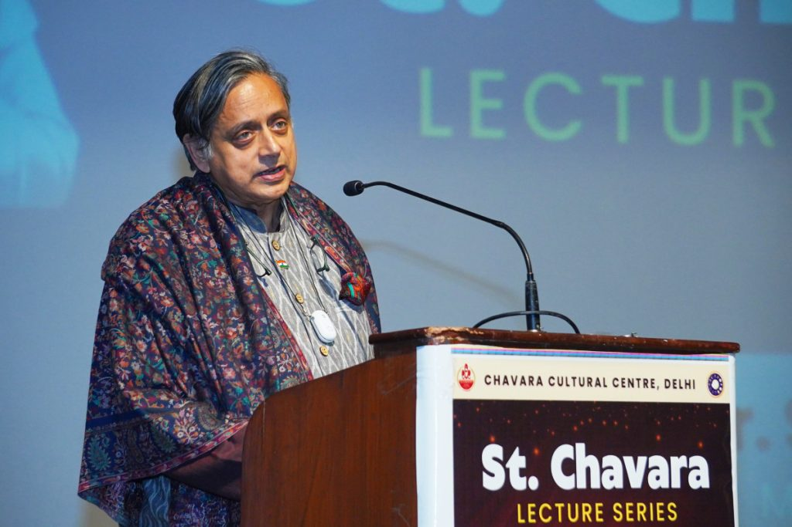
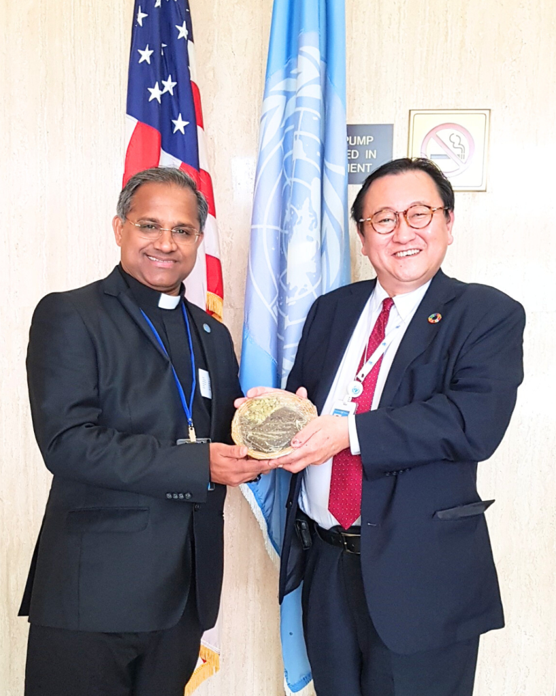
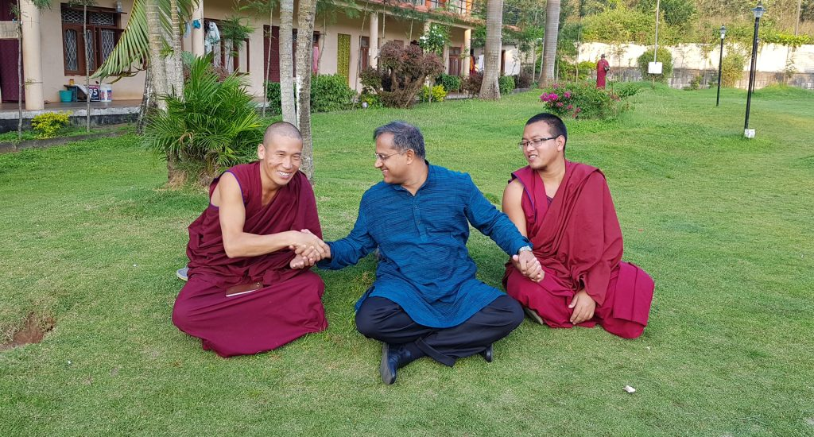
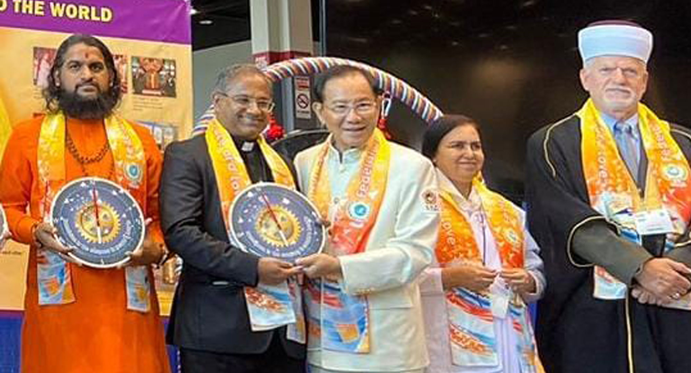
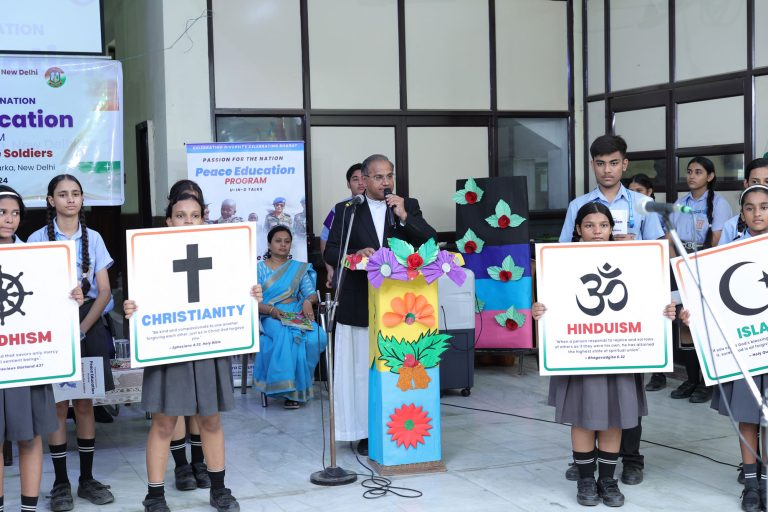
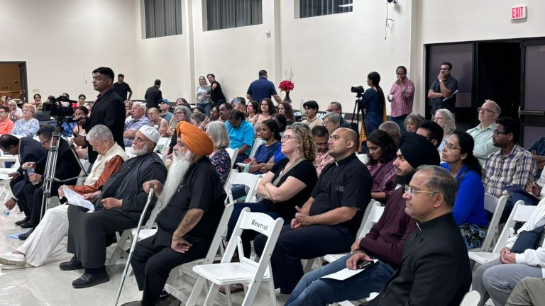
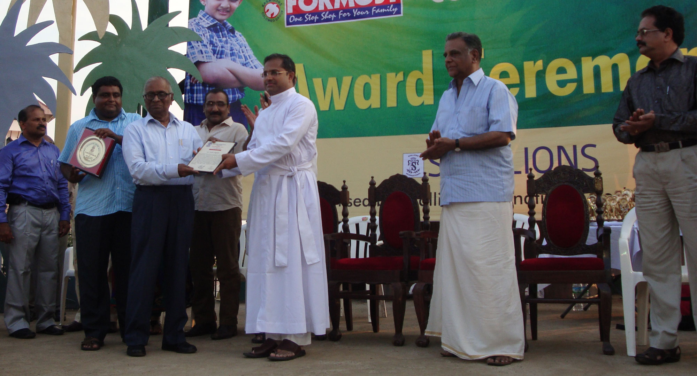
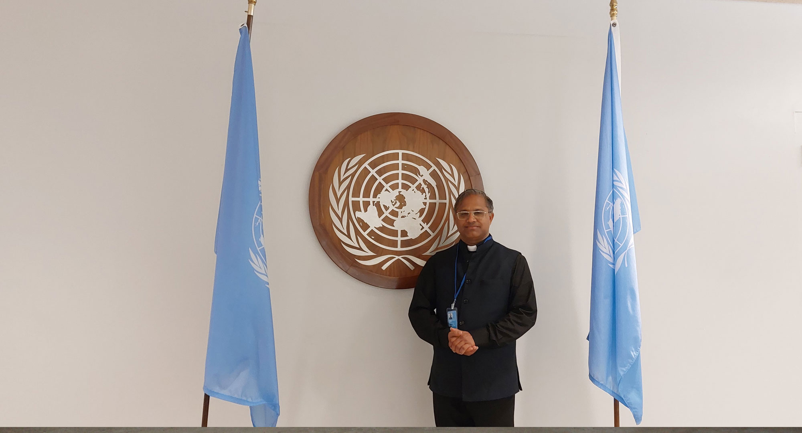

Decades of transformative work across faith, culture, education, and international advocacy — touching millions of lives.
As the Director of the Chavara Cultural Centre in Delhi, Fr. Roby has transformed it into one of the most vibrant hubs for intercultural and interfaith dialogue in the national capital. Named after Blessed Kuriakose Elias Chavara, the Centre serves as a bridge between Kerala's rich cultural heritage and the diverse communities of Delhi.
The Centre hosts hundreds of programmes annually — from classical arts performances and literary festivals to interfaith prayer services, youth leadership camps, and community welfare initiatives.




Organizing regular inter-religious dialogues, seminars, and joint prayer services with Hindu, Muslim, Sikh, Buddhist, Jain, and Christian communities.
Promoting classical performing arts, visual arts, film, and literature as tools for cultural understanding and community building.
Leadership training, camps, and workshops for young people to become ambassadors of peace and interreligious understanding.
Curricula and resource development for peace education in schools, colleges, and faith formation centres across India.
Community welfare programmes offering healthcare, educational support, legal awareness, and livelihood assistance to the underprivileged.
Academic articles, books, and media productions on interfaith theology, cultural studies, and the spirituality of encounter.

Represented India at the International Peace and Harmony Summit in Taiwan, receiving the Award for International Peace and Harmony 2023 — recognized for outstanding contributions to global dialogue.

Organized the landmark Indo–Rwandan Cultural Night in New Delhi — a celebration of harmony through art and diplomacy, bringing together artists, diplomats, and community leaders.

Distinguished speaker at the Global Justice, Love & Peace Summit 2025 in Dubai, sharing insights on faith-based approaches to peace-building and social justice.

Received the prestigious Stallin International Award for Peace and Harmony in Kochi — recognition of his pioneering work in promoting communal harmony across India.
"At the United Nations, every voice counts. Fr. Roby ensures that the voice of India's interfaith communities is heard loudly and clearly."
Fr. Roby participates in United Nations sessions in New York, Geneva, and Vienna. He advocates for peace, human rights, and the rights of religious minorities on behalf of civil society organizations.
